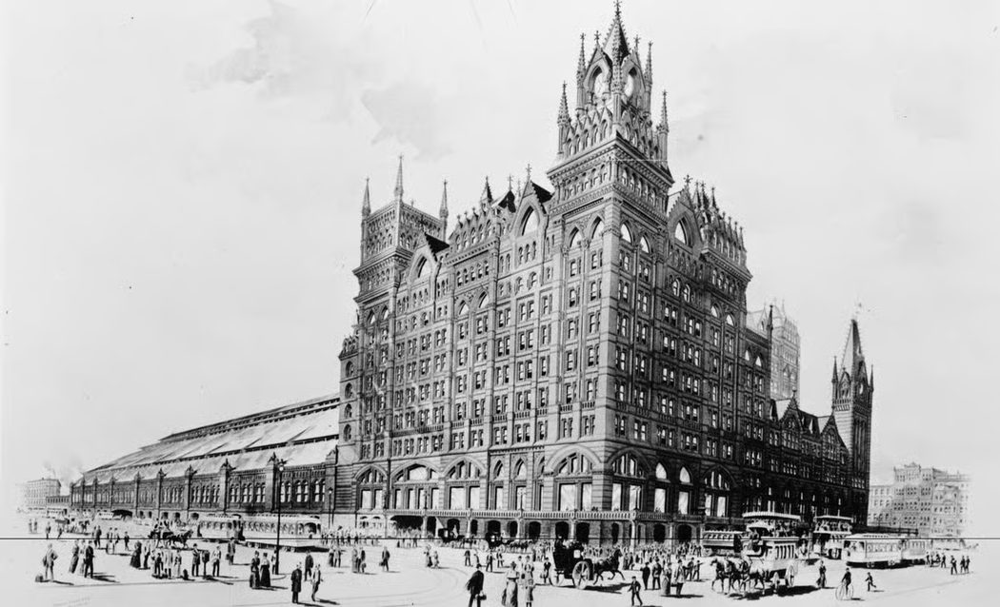
At 10:30 p.m. on the night of Tuesday, July 24th, 1888, Pinkerton agent "F.B.T." stepped off the train from Philadelphia in Lebanon, Pennsylvania. No one in town knew why he'd come, least of all the men he'd soon be sleeping alongside in Robert H. Coleman's stable.
At 5:00 p.m. earlier that afternoon, on orders from his superintendent R. J. Linden, he left the office at 45 South Third Street, proceeded up Market Street where he stopped for supper, and continued west to the Broad Street Station. He noted the on-going construction of the new city hall in the center of the city as he crossed 15th Street. Upon entering the station, he purchased a ticket and proceeded to the upper level where he boarded the train for Lebanon. He rode the 6:25pm departure across the "Chinese Wall" viaduct, crossing the Schuylkill and following the river westward to Reading, and on to Lebanon.
Francis B. Thomas, aka "F.B.T.," investigator for the "agency that never sleeps," walked from the Lebanon station to the Eagle Hotel on the southeast corner of 9th and Cumberland where he retired for the night.
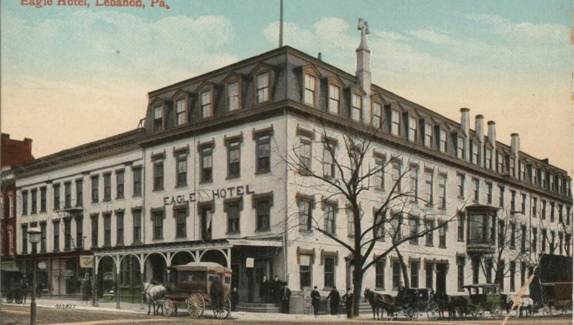
On Wednesday morning he arose at 5:30 with early daylight, had his breakfast and at 8:00 headed out in search of Robert H. Coleman. The manager at the Dime Savings Bank, of which Coleman was the President and Director, reported that he was still at home in Cornwall, and may have worried a little when Thomas thanked him and headed back to the train station to catch the 9:30 train to Cornwall.
The name Pinkerton may not mean to most of us today what it meant to that bank manager. We think of uniformed security guards in movies involving pudgy mall cops, or the sidekick in the "Death Wish" movie franchise, or possibly the driver of an armored bank vehicle. In 1888, the Pinkerton agency was renowned for working with railroads to protect their shipments and property. The president of the Philadelphia and Reading Railroad had hired the agency to investigate the labor unions in the company's mines. An agent infiltrated the Molly Maguires, a secret society of Irish-American coal miners, leading to the downfall of the labor organization. Incidents like these inspired stories by Arthur Conan Doyle and Ian Fleming.
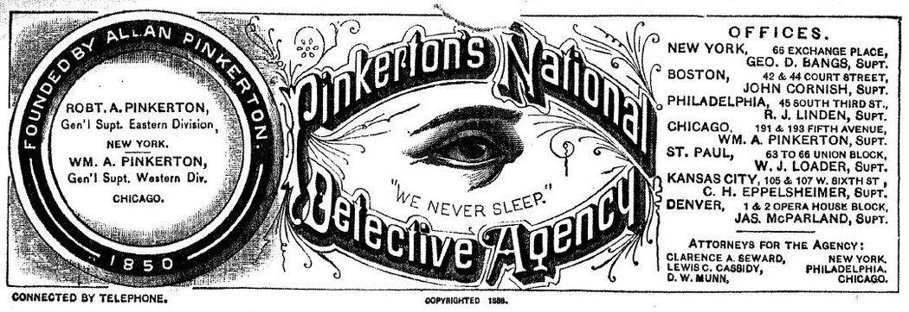
Pinkerton's National Detective Agency was established in Chicago in 1850 by Allan Pinkerton. Working with the railroads and banks, his men chased the likes of Jesse James and Butch Cassidy and the Sundance Kid. Hundreds of Pinkerton detectives were called to Pittsburgh to protect Andrew Carnegie's steel mill and strike-breakers, and were involved in other labor disputes. Allan Pinkerton established himself in 1861 in thwarting the "Baltimore Plot" to assassinate newly-elected President Lincoln on his train ride to Washington to assume the presidency. Lincoln later hired Pinkerton agents for his personal security during the Civil War. Pinkerton agents, including Allan Pinkerton himself, spied for the Union Army during the Civil War.
In 1871 Congress appropriated funds to the new Department of Justice, for the detection and prosecution of violators of federal law. The amount was insufficient to establish a new unit so the Department contracted the services of the Pinkerton National Detective Agency. This practice continued until the passage of the Anti-Pinkerton Act of 1893, which prohibited the use of such detectives, for fear that private agents would have inappropriate access to sensitive government information. By the 1890s the agency was so large, with 2,000 detectives and 30,000 reserves, that they were greater than the standing army of the United States.
In short, Pinkerton's important legacy led to the establishment of the protective role of the Secret Service (1901) and the Federal Bureau of Investigation (1908). The common term of "private eye" for an investigator originated with the eye "that never sleeps" in the Pinkerton National Detective Agency logo.
Despite this fearful reputation, Bob Coleman was not troubled when Agent Thomas knocked on the door of the Coleman mansion in Cornwall in the middle of that Wednesday morning. For Coleman had requested their services.
Robert H. Coleman invited Agent Thomas into his parlor, where his secretary Capt. B.F. Hean was also waiting. As they sat he described the need for Pinkerton's services: there was ongoing trouble in his stable, ranging from cruelty to animals, fighting among the men, and neglect of work. Coleman believed the best course was an undercover assignment for Thomas to identify the person causing the trouble so he could then deal appropriately and fairly with the problem.
Coleman, age 32, had grown significantly in stature in a few short years. Born and raised in Savannah, Georgia, he had inherited the vast Coleman fortune at age 9, having spent his early years in a Connecticut prep school. At age 5 he lost his father and his widowed mother held tight reins on him, constantly and lovingly criticizing his spelling and chastising his mischievous school boy behavior. He graduated from Trinity College in 1877 next to last in his class academically but first in popularity, given his generous parties, dances, sports and musical pursuits. His trustee Samuel Small of York, Pennsylvania had turned over responsibility to him for operation of the mine, furnaces, farms and other businesses by age 22. His trusted advisor Artemas Wilhelm guided his hand as he transformed the family wealth into a sizeable empire, and he became arguably the key citizen of Lebanon with his great philanthropy and business leadership. Coleman had outgrown Wilhelm's fatherly guidance, terminating his employment in 1885.
It had also been eight years since the heartbreaking loss of his first wife to illness. Matured by these circumstances he had since remarried to childhood friend Edith Johnstone, whose guardian was Coleman's own mother Susan Ellen Coleman. Coleman now had young children of his own.
After their interview, Capt. Hean took Thomas down to the stable, a quarter mile from the mansion. There Thomas was introduced as a new employee to Mr. Morgan, the stable boss, who assigned him a position as hostler (horse tender) in the stable and ordered him to report to work the following morning at 5:00. He was assigned to board with one of Coleman's clerks whose house was nearest to the stable. Thomas returned to Lebanon midday by train, had dinner at the hotel and walked about town. He returned to Cornwall on the 5:00pm train and proceeded to the boarding house, but was already deciding that on following nights he expected to sleep in the stable, as there was a nicely furnished room he could have to himself.
Thomas reported to Morgan at the stable where he was put to work with the other stable hands. They worked until noon, stopped for dinner and continued in the afternoon until 5pm. Thomas interviewed one of the men named Christ, who spoke admirably of Morgan but noted that he spent little time around the stable.
Unprompted, Christ quickly identified two others, Fornwalt and Schult, as troublemakers. Having worked there over 8 years (the stable was less than 10 years old), and more than the rest, Fornwalt felt he should be boss and acted that way when Morgan was not around. He would try to foist his work onto the other men, leading to fights, with the work left undone.
After the evening meal Thomas walked the grounds and met Myers the gardener, who warned him to do his work perfectly if he wished not to be discharged; he also warned of two troublemakers, Fornwalt and Schult, who tried to run things. Asked about Morgan, Myers considered "the Englishman" a good boss and a first-class man.
At that point Myers was called off to the greenhouse and Thomas went to the stable to help put away some horses that had just come in. He retired to his room at 10pm. As he wrote the daily report to his supervisor he was surprised how easily this assignment seemed to be going. (Note: much of his words and writing style are repeated exactly in this account.)
Thomas went to work again at 5am to clean his assigned horses, then stopped for breakfast and worked until the noon meal. In the afternoon Mr. Coleman had ordered the four-in-hand (aka "stagecoach") and two double teams to Mt. Gretna, as there was a National Guard encampment in progress. All of the men except Thomas went along to care for the horses, returning at 7:30pm.
The late arrival still required the cleaning of the horses and harnesses. After Morgan gave the orders and left, trouble began immediately. Fornwalt picked on Christ on how he was cleaning the harnesses, who simply reminded Fornwalt he wasn't the boss and that he was doing the work correctly. Another man, Benner, defended Christ's work and told Fornwalt to leave him alone.
When the work finished at 9 pm and the men went home, Thomas asked Benner's opinion of Fornwalt. "Don't mind him, he is decent enough, but tends to boss others and wants his own way." Further, "Morgan is a good-hearted Englishman — anybody can get along with him."
Thomas noted in his daily report that it was a busy week around the stable and with Morgan being away in Mt. Gretna so much he did not yet have a solid opinion of Morgan. "But today being the last of the encampment he will be around the stable more." He also noted that he has not seen the Secretary since their first meeting, but he hoped to meet tomorrow to gain his views of the men and the workings of the stable. He also planned to go to the "City" on Sunday with two of the men.
Thomas had the luxury of an extra hour of sleep, then enjoyed breakfast before going to the stable to work. Otherwise, the daily routine seemed the same as any other until an incident of animal cruelty erupted. Fornwalt was cleaning a horse, which pawed the floor and lightly bumped Fornwalt's foot. He responded by kicking the horse on the shins and beating him with a curry comb. In only a few days this was not the first time Thomas had seen Fornwalt kicking a horse.
Later, when a horse got loose and ran out into the field, Fornwalt gave chase on another horse for about 15 minutes before catching it. One of the other men, Foster Yake, said to Thomas, "you watch, when he catches him he will knock the legs from under him." "Does he often beat the stock?" "Yes, when they get him mad." However this time Fornwalt simply brought the horse back without laying a hand or foot on it.
That evening Thomas met with Capt. Hean in the office. Hean had limited knowledge of the men in the stable but knew of the two who made trouble. "Mr. Coleman does not want to discharge either until he's satisfied they are the guilty ones. Schult makes a great deal of trouble by skulking out of work; he says he's going up to the house, but instead he goes and lays off somewhere and either goes to sleep or goes home. The other men are always grumbling about it."
The day started at work like any other, until at 10 am he was ordered to accompany Morgan to Lebanon to take care of the teams that took Mr. Coleman and his guests to church. Thomas took the opportunity to praise the livestock and the management of the stable.
Morgan replied by saying the stable would run better if one man in particular, Willie Fornwalt, would take care of his own work. Morgan sensed the men were continually running him down behind his back even though to his face they were as nice as could be. He thought Fornwalt disliked him because he was an Englishman. Apparently Fornwalt complained of Morgan to outsiders and even to Mr. Coleman himself.
Morgan's method of dealing with Fornwalt has been to go easy with him but without much improvement. Morgan warned Thomas to be careful, as Fornwalt could likely complain to Mr. Coleman and get him discharged. "Fornwalt feels he deserves to be boss but is frustrated that Mr. Coleman has a foreigner managing his stable." Fornwalt had complained to Mr. Coleman that Morgan was ill-treating the men, and "there was no living with him," however no one else except Schult supported the complaint. Morgan added, "Schult causes trouble by sneaking out of work and blaming other men for his misdeeds."
They returned to the stable at 1:00pm, had dinner, and then were done for the rest of the day. In the evening he got into conversation with Fornwalt and engaged in running Morgan down to see Fornwalt's reaction, who readily agreed. He said "you can probably get along with him all right, but I cannot stomach a two-faced lime-juicer, and that is what Morgan is. I can't live with him and not much longer. If Morgan gets a chance, he'll drive me out but I'm not giving him that chance. We've fought before but I'm not letting him ride over me. The others are soft but Morgan knows I'm not taking anything from him."
Thomas wasn't entirely sure how to read Willie Fornwalt's intentions but noted the exchange in his daily report.
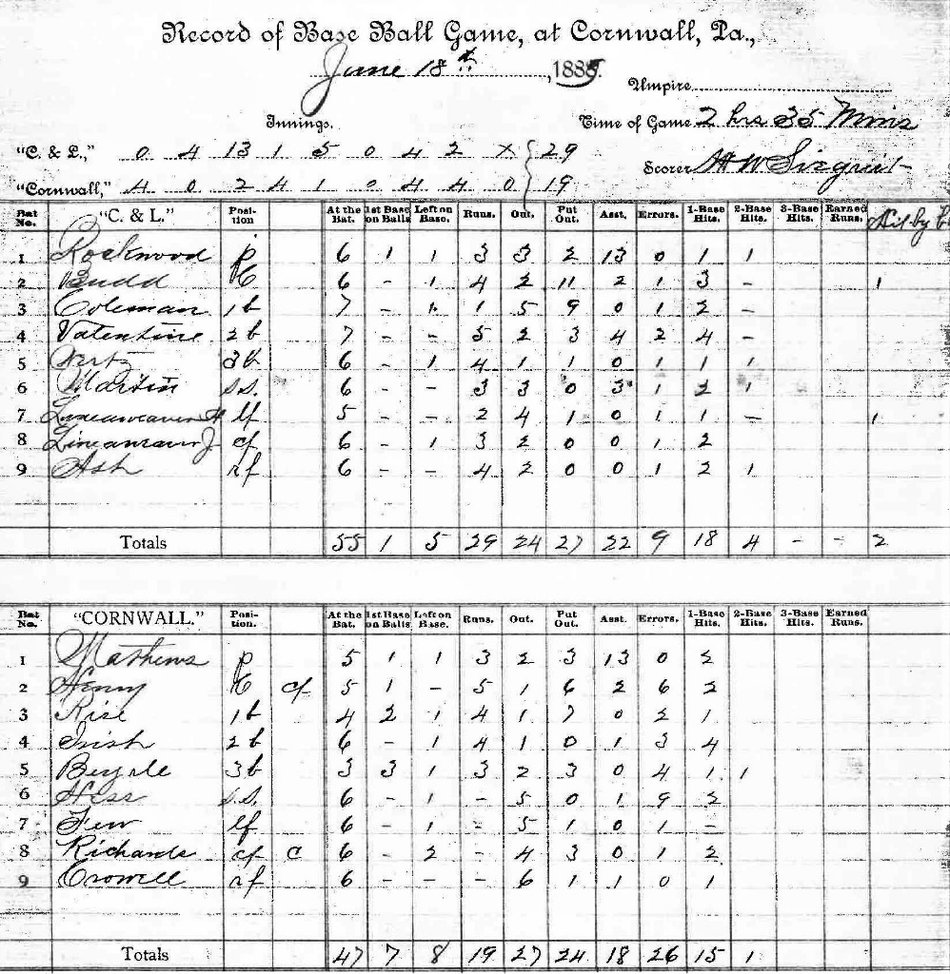
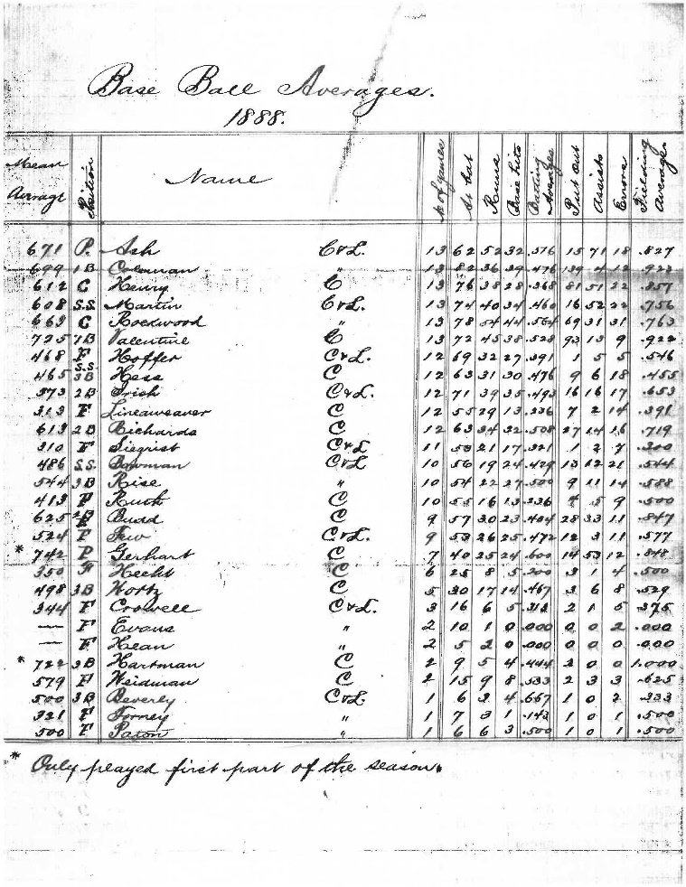
There being no teams ordered out today, Thomas finished his work in the stable by mid-morning. The men sat about the remainder of the day and Thomas made note of a few remarks made by Fornwalt and Schult about Morgan.
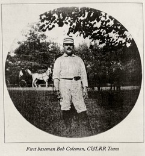
Mr. Coleman had a number of gentlemen over to play baseball in the nearby field and sent Morgan to retrieve some extra gloves for the players to wear. Morgan asked all the men for their gloves but it seemed no one had any except for one man. When he asked Fornwalt for a pair he knew him to have, Fornwalt replied "I lost it." Fornwalt privately commiserated with Schult, "just you see, the damn Englishman will go tell the boss all about it."
Later Fornwalt found Christ smoking a pipe that belonged to Morgan and told him "if that lime juicer sees you with that pipe you'll be hearing from him. If you knew an Englishman like I do you wouldn't be smoking it." Christ replied not to worry as he'd smoked it before.
Schult's job was carriage-washer; Thomas describes him as distant and close-mouthed. "He tends to be absent until Morgan shows up, suddenly he is 'all work,' then he returns to his loafing."
The stable hand named Yake described Christ as an old devil, who causes trouble by telling Morgan everything he hears the men saying about him. Fornwalt seemed to be the only man working against Morgan, thinking he is being mistreated, when the prevailing view is that Morgan treats everyone well enough.
At 10:30pm Thomas helped get a team ready to take a gentleman to Lebanon. Before retiring for the evening Thomas reported in his journal that he intends tomorrow to proposition Fornwalt to do something that will get Morgan in trouble, and hopes that he will bite.
Thomas noted in his journal on this otherwise uneventful day that Fornwalt considers himself "pretty good friends" with Mr. Coleman's mother, Susan Ellen Coleman, claiming "she would do anything for him." Likewise, Schult seemed to think he was held in high regard by her and that he could do as he pleased.
That evening Thomas saw the manager secretly, hearing from him that Mr. Coleman hoped he was making out well. The manager had reported that Thomas was "making out first class."
With nothing else to do on an early summer evening Thomas took that hint of endorsement and went for a walk about Cornwall. As he passed the ball field a train sat huffing by the station. He looked upwards past the iron railroad bridge and noted the smoke from the chimney at the Mill and beyond that the tall stacks of the iron furnace fuming into the sky. Patch & Brady's store was still open so he wandered in and dug eighteen cents out of his pocket for cigarettes. On his way back to the stable all the noise of the evening made him think of home in Philadelphia.
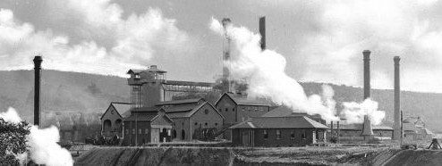
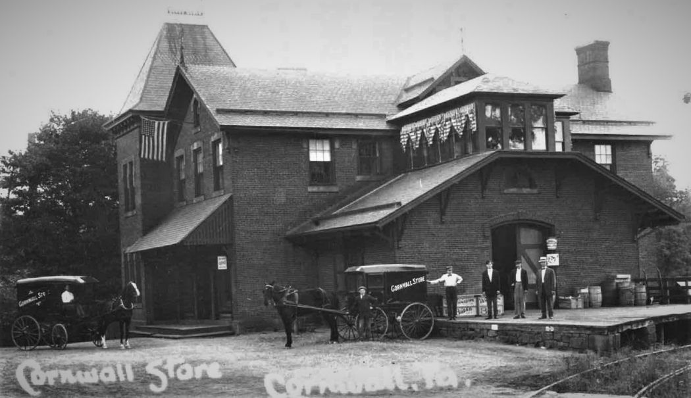
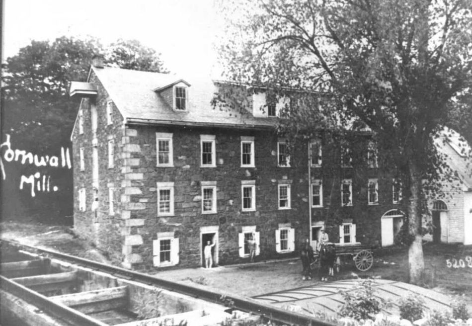
After completing his morning duties Thomas retired to his room in the stable and was surprised by an unexpected visit from Fornwalt. He seemed downhearted and proceeded to pour out his troubles, considering Thomas a new man who could be trusted. Without any instigation on Thomas' part, Fornwalt described his plan to get Morgan in trouble with Mr. Coleman regarding the horses. He wished there was a drug store in Lebanon where he wasn't known, so he could get "some aloes, black atamonia and sweet oil." "Some night when Coleman was going for a drive I would give it to the horses, it would not hurt the horse but make him so weak he would drop on the road and Morgan would be blamed for it."
Perhaps more shocking, he described his "relations with Mrs. Coleman Sr.," who would send for him to come up to her bedroom where she would give him her orders for transportation. "When I would go up she would have nothing on but a chemise, I swear to that, and some of the men know it. But since I got married she don't think so much of me and now Wash Schult is her pet." He went on to blame "the Englishman" for all of his troubles and he intended to "fix him before I leave."
Thomas caught wind of the men's suspicions concerning him. Apparently Morgan had told the men he believed Mr. Coleman was going to "clean house" at the stable because typically Morgan had hired the men, and here Thomas had been hired on directly by Mr. Coleman. The men were frightened and were becoming more careful about their work. Schult, for example, would not talk at all, and told Morgan he had learned his lesson from the last round of trouble. Morgan had passed all of this on to Capt. Hean. Thomas made a note to be cautious.
An uneventful summer day, Thomas finished his work in the stable in the morning. He recorded that after the noon meal he lounged about the stable throughout the afternoon. The other men were keeping to themselves, reading novels. Nothing of importance being observed, that evening Thomas enjoyed a walk through the grounds before retiring. From the walls of Mr. Coleman's music conservatory, Thomas heard the sounds of the great organ that was Coleman's pride and joy. On other occasions he had heard the whistles and rattles of Coleman's model train shop. However this evening it was music, joined in with peepers and crickets.
Thomas went to the office to post his regular letter to Mr. Linden, his superintendent in Philadelphia. As before, Mr. Linden would review the report and prepare a typewritten letter to Mr. Coleman, so that Mr. Coleman was receiving updates every few days.
On his way to the office, Morgan stopped him and asked a favor, as he was going off to New York for a few days. Thomas was to keep an eye on the stable and on Fornwalt in particular, reporting any concerns to Capt. Hean. Morgan was well aware that Fornwalt "would do anything to hurt him. See that he does not hurt the horses, and if he does report him to the Captain."
It was a typical day of work otherwise until evening. Thomas went to visit the manager, who informed him that Mr. Coleman had decided to discharge Fornwalt. Further, Thomas was to stay on a few more days to avoid suspicion as to his role in the matter.
Fornwalt met Thomas early in the stable, telling him he was off for the day to Columbia, Pa. and would be returning in the evening. Before the noon meal, Thomas went to his room and was met by Capt. Hean, who said Mr. Coleman had received the latest letter from the Agency and was very angry and sent Hean to discharge Fornwalt at once, having heard enough and perfectly satisfied to send him away "where he would never see him again."
Thomas went back to work. Things were quiet the rest of the day with Morgan and Fornwalt away. Christ was also off in Colebrook.
By 7:30 a.m. Capt. Hean had discharged Fornwalt, who took it very quietly, blaming Morgan, and left the stable. That left the other men griping all day about who got to take over Fornwalt's work. Both Christ and Yake claimed it and the issue wouldn't be settled until Morgan returned.
Frightened by Fornwalt's dismissal, the men blamed Christ, as he was known to often be the snitch to Morgan. While Yake warned Thomas to steer clear of Christ, he as well as Schult and Benner blamed Morgan. Schult guessed he would be the next to go, "for the d——n Englishman does not like me and knows I have no love for him, and he knows who is back of him."
Waking early, Thomas heard some activity in the stable and went down to find Fornwalt packing his things. Thomas arranged for the day off and prepared a team to help take Fornwalt and his gear back home to Bismarck, about a mile away. After breakfast Fornwalt made plans to hire a team and go to Lebanon. Thomas returned the Coleman team to the stable and then rode the train to Lebanon, where the two walked about town seeing the sights.
As they talked he learned more about Fornwalt's grievance. The former stable boss, Johnson, used to make a "stake" or profit when going to New York to buy horses or wagons for Mr. Coleman. He would mark up whatever he paid, charge the higher amount to Mr. Coleman and keep the rest as commission. Normally Johnson would share some of it with Fornwalt and Curry the harness maker. Fornwalt was used to making an extra $35 a year in such tips but has seen none of it since Morgan took the job.
Apparently Morgan had bought a chestnut horse in New York for $350, charged $700 to Mr. Coleman and with the rest he "furnished his house in good style," not sharing any with Fornwalt. When challenged, Morgan refused to pay him. Ironically, the reason Morgan was away presently was to purchase a horse and presumably was making a nice profit doing it.
Thomas treated Fornwalt to whiskey twice during the day, noting in his report that he took soft drinks for himself. He returned to Cornwall via train, helped bed the horses before retiring himself.
The men kept to themselves, making this a very quiet and routine day. Thomas enjoyed walking around the grounds in the evening to the sounds of organ music and the roar of the nearby iron furnaces, before retiring again to his room in the stable to write his report.
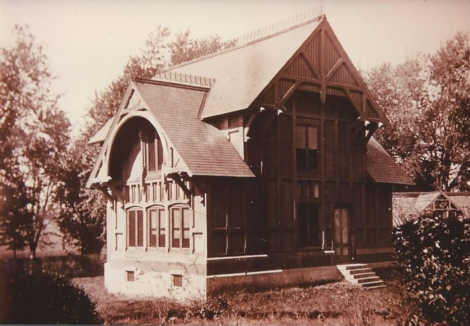
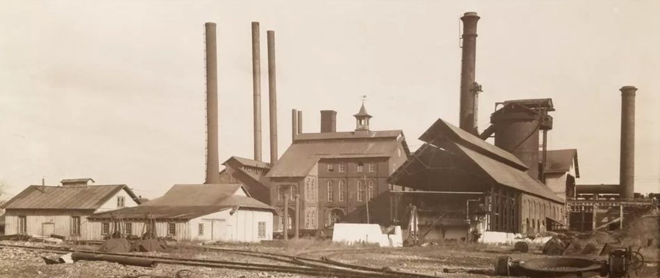
Morgan was still away and not expected to return until Friday. Thomas observed the men working harmoniously whenever an order came in for a team. He tried unsuccessfully to engage Schult in conversation. He seemed very shy to talk with anyone on any subject concerning the stable or Morgan. When his work was done he would either find a quiet place to read, or go home. The other men behaved likewise.
That evening after supper Thomas walked over to the Cornwall rail station to post a report, and spent the pleasant summer evening there before retiring to the stable.
Another easy summer day, work in the stable was done by noontime and after dinner Thomas found the other men sleeping around the stable; he returned to his room to read. Benner came up to pass the time.
He spoke well of Mr. Coleman, who had given him a watch. "Schult thinks too much of himself, thinking he can do as he pleases, because he considers himself a favorite of Mrs. Coleman Senior."
Further, said Benner, he planned to look out for himself, not being "dragged into a hole like Jake (Christ) did Puffer (Fornwalt)."
Thomas went off to the rail station again late in the afternoon, then returned for supper and a quiet evening.
An uneventful day. In the evening, Captain Hean found Thomas to let him know to go see Mr. Coleman. In his office, Robert Coleman told Thomas he was pleased with the work he'd done and considered the work complete. In a few days he would write the agency to withdraw him, and for the meantime remain around "in case anything turned up."
Morgan had not yet returned from New York, and everything else was running smoothly, "in perfect harmony" in the stable.
All of the work for the day was routine. Morgan returned in the morning and was pleased to learn of Fornwalt's discharge. He had not yet spoken to Thomas, who assumed Morgan would "pump him" for details as to how things transpired during his absence.
Another quiet day, with just a little of watering and care for the horses. Morgan was in bed with a back sprain for the day.
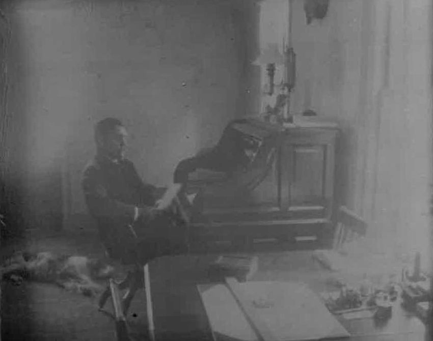
Robert Coleman sent a letter to R.J. Linden, Thomas's supervisor, directing him to close out the job. Linden already had another job waiting for Thomas and sent him a telegram directing him to withdraw, "without exciting suspicion."
Further, Coleman inquired of Linden, asking him to send a man who would serve as timekeeper and day boss. Thomas began wondering if Mr. Coleman had other intentions for Morgan after all.
Linden responded to Coleman's letter, advising him he had in mind a man for the day boss position and asked what salary would be paid.
Thomas reported a routine day. He was sent to Lebanon in the afternoon on an errand and returned in the evening. Nothing of interest to the operation had occurred, and Morgan had still not approached Thomas for any information.
Thomas worked a normal day and late in the afternoon went to the clerk's office to draw his salary of $6.25. Early that evening he returned to the office and returned the wages to Capt. Hean.
Later, Morgan paid Thomas a visit in his room where the two spoke for about an hour. Morgan asked how things had gone during his absence and Thomas essentially reported nothing, just "all right." He then learned from Morgan that Schult got an earful from Mr. Coleman on Sunday night, who made it clear that if Schult caused any trouble, he would be blackballed in this county so that he would never get any work.
Morgan was pretty sure now with Fornwalt gone and Schult "straightened out" by Mr. Coleman that his own troubles were over. What puzzled him is "how the boss found out so much about these fellows, he seems to know just what happened."
Morgan wanted to know what Fornwalt had said about him while he was away. Thomas alluded to hearing about the "commissions" Morgan got, claiming to not understand what Fornwalt had meant. Morgan replied, "well I know when Johnson was here, he and Fornwalt and some other fellow used to have women come here in this room, and Johnson used to give him money and other things to keep Fornwalt quiet about it. Fornwalt thought it was a commission, but he was mistaken if he thought he'd have the same thing from me."
"I never got commission from anyone! If I had, I'd sure have more money than the $50 I own. If I sometimes get a present from anyone, I'd give the man half of that, wouldn't I? Anyway the man is gone and I expect everyone will enjoy working here now."
Morgan promised to look out for Thomas: "if you want anything you can have it. Stick by me, and if you see anything go wrong let me know and I'll settle it quickly."
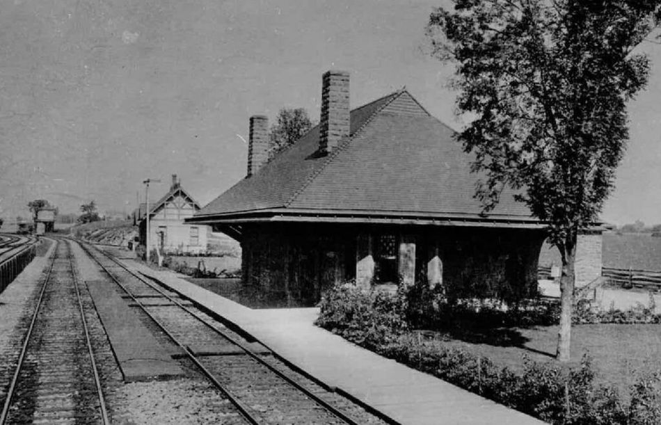
Thomas started his workday but then received a telegram at 10:30 a.m. directing him to return home by the first train. He went looking for Capt. Hean at the office and learned he was over at the furnaces.
They spoke there and Hean sent him to see Mr. Coleman in Lebanon before departing. Thomas caught the 1 p.m. train to Lebanon, went to the bank, only to learn that Mr. Coleman had just left for home.
Thomas returned to Cornwall one more time on the 2 o'clock train and went to the office where he received wages of $12.50. He packed up his valise at the stable, bade the men goodbye and visited Mr. Coleman in his private office to return the wages and debrief.
Mr. Coleman was very well satisfied with the results of the assignment. Thomas worried that Coleman might have acted too soon in dressing down Schult, as Morgan had told Capt. Hean that "someone was acting as spy around here since Mr. Coleman knew all the details of what had happened." "Don't you worry about that," said Robert Coleman. "I'll fix that all right."
Thomas left for the station just in time to catch the 3:20 to Philadelphia, where he arrived around 6:50 p.m. and retired to his residence, mission accomplished, on Aug. 15.
Epilogue
Civil War hero Capt. B.F. Hean served as Coleman's secretary and furnace manager for two more years before becoming elected as Lebanon Court Clerk. By 1895 he had embezzled money from Lebanon and turned up dead in Melbourne, Australia, a few months later. (Editor's note: watch for more about Capt. Hean in a future installment of "Who Knew?")
Although life in the Coleman stable was a bit slow for the men, especially during summer months, Robert Coleman continued to balance a busy life. In addition to his role at his bank, farms, horses and herds, several furnaces, and the Cornwall Ore Bank, he found time with his young family and also played baseball with his colleagues as well as socialized with the Coleman cousins in Cornwall, often bowling or playing croquet.
When he had evenings free, he lost himself in his private Music Conservatory, playing the water-powered organ. He composed music and continued practicing for the times he would play for his friends. On other nights he would while away hours in his model train shop, tinkering with steam engines or his prized telegraph key, "toys" he had enjoyed since his youth. On Aug. 14 he gained approval of patent #387,623 for "a method of promoting combustion of fuel and extinguishing sparks in locomotive and other boiler furnaces."
Railroads were becoming an ever-larger fascination for him, far beyond the Cornwall & Lebanon and Mount Gretna rails. Though it would later lead to his downfall, he was venturing into partnerships with Henry Flagler and Henry Plant, men developing Florida with railroads and hotels. Coleman had a dream home designed for himself in St. Augustine, and in the previous year he purchased a private rail car "Cornwall" from Jackson & Sharp of Wilmington, Delaware, which had been specified to exceed the opulence of Flagler's own private car "Minerva." In this August of 1888, Coleman had arranged to take his family on a rail trip to Niagara Falls, traveling as they had to points as distant as Florida and San Diego, California.
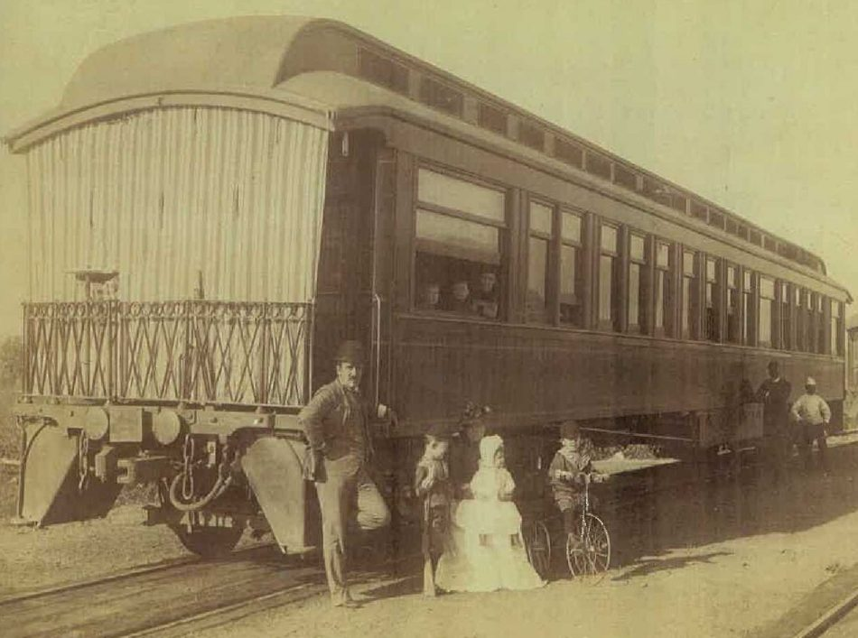
Note: "F.B.T." is a fictional name; probably in character with the secretive nature of the agency, the agent signed his reports with his initials only and never revealed his real name.